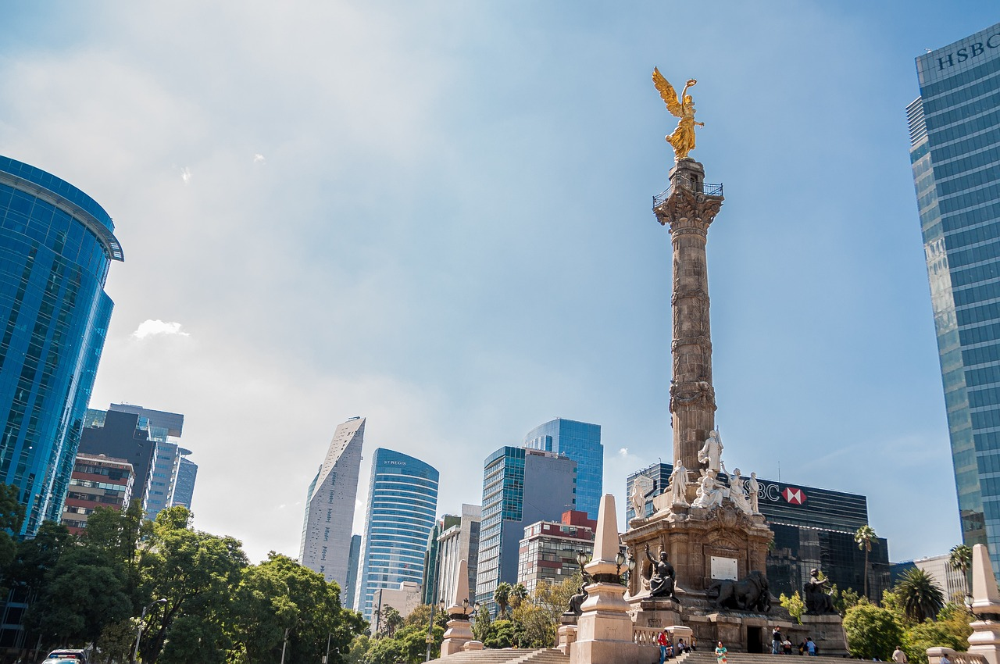
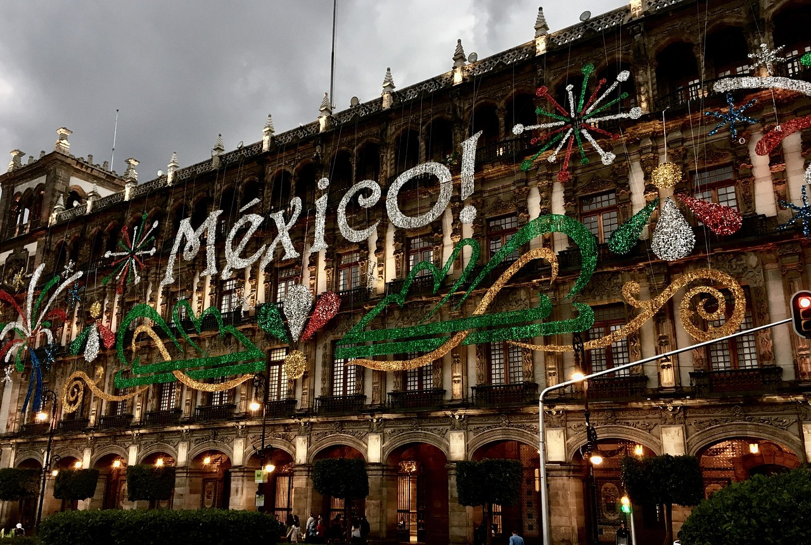
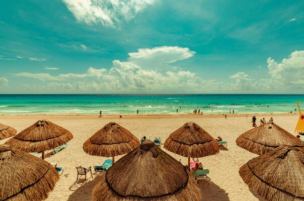
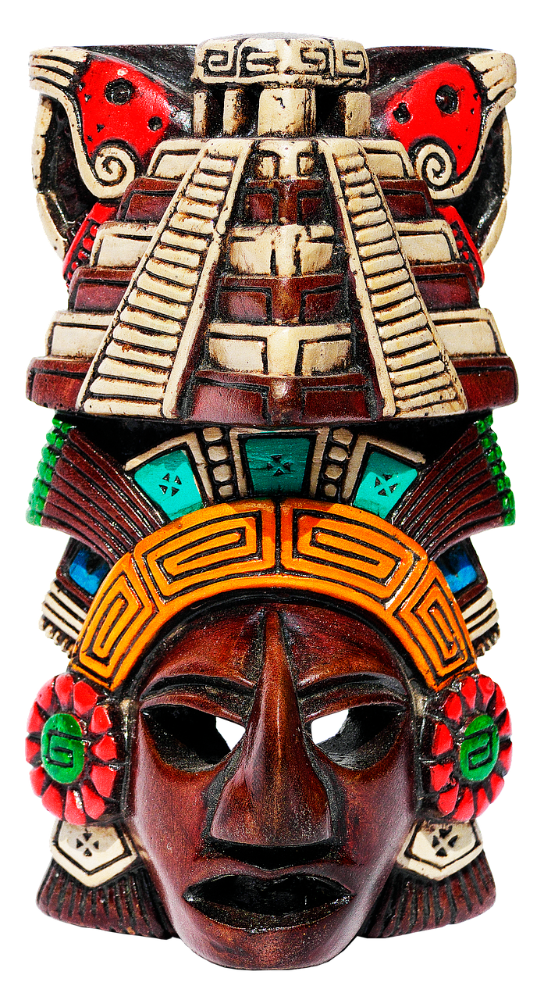
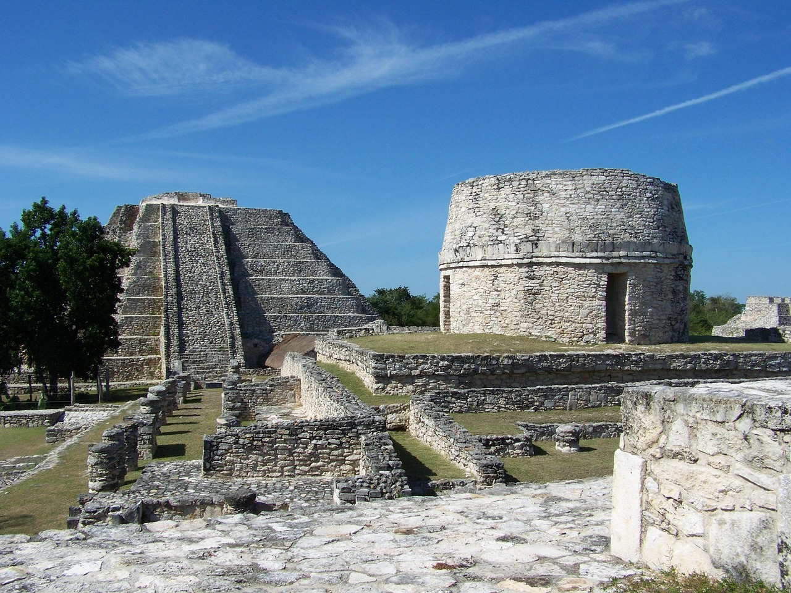
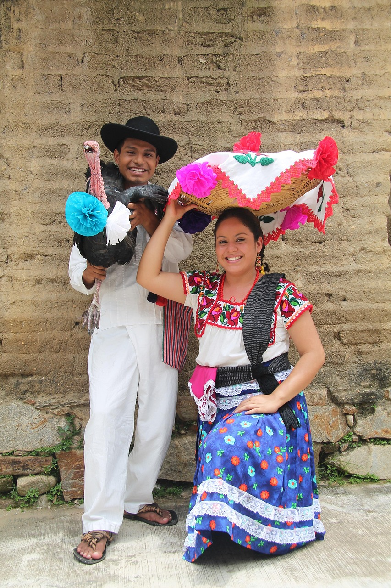
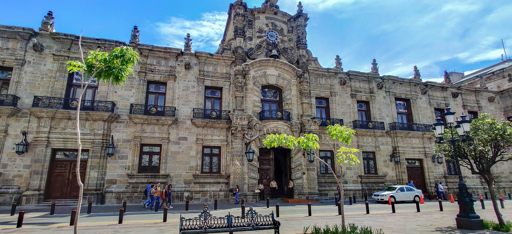
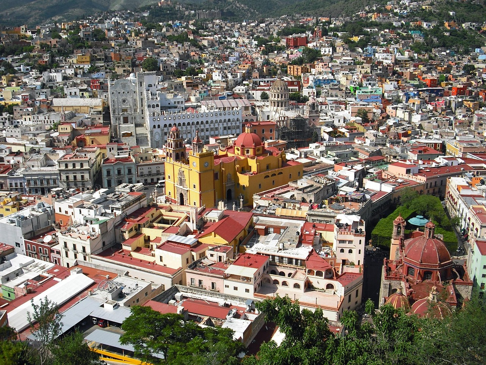
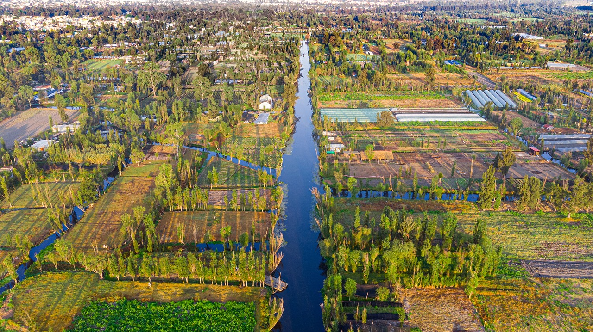
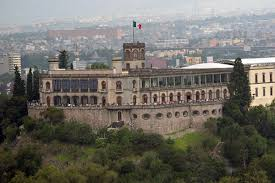

La capital mexicana, dinámica y vibrante, es una metrópolis que combina la riqueza histórica con la modernidad. Visita las impresionantes ruinas del Templo Mayor, que fueron el corazón del imperio azteca, y admira la imponente Catedral Metropolitana y el Palacio Nacional, dos iconos de la arquitectura colonial.

Este destino caribeño es reconocido por sus playas de arena blanca y aguas turquesas, así como por su animada vida nocturna. Relájate en los exclusivos resorts de la Zona Hotelera, explora el fascinante Museo Subacuático de Arte (MUSA), que alberga más de 500 esculturas sumergidas, o aventúrate en la selva maya en los parques temáticos Xcaret y Xplor, que ofrecen una mezcla de naturaleza y actividades de aventura como tirolesa, snorkel y recorridos en ríos subterráneos.


Este corredor turístico, que se extiende a lo largo de la costa caribeña desde Cancún hasta Tulum, ofrece una amplia variedad de atracciones. Descubre las impresionantes ruinas mayas de Tulum, situadas sobre un acantilado con vistas al mar Caribe, y disfruta de los cenotes, majestuosas cavidades subterráneas llenas de agua cristalina que son ideales para nadar y bucear.

Oaxaca es una ciudad colonial declarada Patrimonio de la Humanidad por la UNESCO, conocida por su rica herencia cultural y gastronómica. Recorre sus pintorescas calles empedradas, admira la arquitectura barroca de la Catedral y el Templo de Santo Domingo, y deléitate con la gastronomía local, famosa por sus moles, tlayudas y el tradicional mezcal.

Guadalajara, la segunda ciudad más grande de México, es conocida como la cuna del mariachi y el tequila. Explora su centro histórico, donde se destacan la majestuosa Catedral y el Teatro Degollado, y visita los tradicionales barrios de Tlaquepaque y Tonalá, famosos por su rica artesanía.

Guanajuato, una ciudad colonial también declarada Patrimonio de la Humanidad, es famosa por su laberinto de callejones adoquinados, túneles subterráneos y coloridas casas. Visita la histórica Alhóndiga de Granaditas, un sitio clave de la independencia de México, y disfruta de las estudiantinas, grupos musicales que recorren las calles interpretando canciones tradicionales.

El Lago de Xochimilco, famoso por sus trajineras decoradas con vibrantes flores de colores, es una de las imágenes más representativas de la Ciudad de México. Este lago forma parte de los cinco que conforman el Valle de México y es un destino turístico imprescindible por su belleza natural y su rica tradición cultural.

Con más de 229 años de historia, el Castillo de Chapultepec continúa erigiéndose en la Ciudad de México como un símbolo de su legado cultural. Construido entre 1785 y 1787, ha sido sede de virreyes, un observatorio, un colegio militar (1841) y residencia presidencial. En la actualidad, alberga un museo que conserva y exhibe el patrimonio histórico de la nación.
mas opciones
Precios de Destinos Turísticos
| destino | precio |
|---|---|
| cdmx | $20,000.00 |
| oaxaca | 50,000.00 |
| cancun | $120,000.00 |
| tulum | $67,000.00 |